Descriptive statistics#
In this notebook we’ll see how to calculate numerical and graphical summaries of different types of data. Open the chapter preview in another tab, and follow along with the hands on calculations based on pandas and plotnine.
import numpy as np
import pandas as pd
import seaborn as sns
from plotnine import *
from plotnine.themes.elements import element_blank
# notebooks figs setup
%matplotlib inline
import matplotlib, matplotlib.pyplot as plt
# matplotlib.rcParams['figure.figsize'] = (20, 12)
# silence please; developers at work
import warnings
warnings.filterwarnings('ignore')
#@title Load CSV data
import io
data_file = io.StringIO("""
student_ID,background,curriculum,effort,score
1,arts,debate,10.96,75
2,science,lecture,8.69,75
3,arts,debate,8.6,67
4,arts,lecture,7.92,70.3
5,science,debate,9.9,76.1
6,business,debate,10.8,79.8
7,science,lecture,7.81,72.7
8,business,lecture,9.13,75.4
9,business,lecture,5.21,57
10,science,lecture,7.71,69
11,business,debate,9.82,70.4
12,arts,debate,11.53,96.2
13,science,debate,7.1,62.9
14,science,lecture,6.39,57.6
15,arts,debate,12,84.3
""")
grades_data = pd.read_csv(data_file, index_col="student_ID")
grades_data
| background | curriculum | effort | score | |
|---|---|---|---|---|
| student_ID | ||||
| 1 | arts | debate | 10.96 | 75.0 |
| 2 | science | lecture | 8.69 | 75.0 |
| 3 | arts | debate | 8.60 | 67.0 |
| 4 | arts | lecture | 7.92 | 70.3 |
| 5 | science | debate | 9.90 | 76.1 |
| 6 | business | debate | 10.80 | 79.8 |
| 7 | science | lecture | 7.81 | 72.7 |
| 8 | business | lecture | 9.13 | 75.4 |
| 9 | business | lecture | 5.21 | 57.0 |
| 10 | science | lecture | 7.71 | 69.0 |
| 11 | business | debate | 9.82 | 70.4 |
| 12 | arts | debate | 11.53 | 96.2 |
| 13 | science | debate | 7.10 | 62.9 |
| 14 | science | lecture | 6.39 | 57.6 |
| 15 | arts | debate | 12.00 | 84.3 |
# rows
grades_data.index
Index([1, 2, 3, 4, 5, 6, 7, 8, 9, 10, 11, 12, 13, 14, 15], dtype='int64', name='student_ID')
# columns
grades_data.columns
Index(['background', 'curriculum', 'effort', 'score'], dtype='object')
Describing numeric data#
Let’look at the scrore variable.
scores = grades_data['score']
scores.describe()
count 15.000000
mean 72.580000
std 9.979279
min 57.000000
25% 68.000000
50% 72.700000
75% 75.750000
max 96.200000
Name: score, dtype: float64
scores.median()
72.7
scores.max()
96.2
scores.mean()
72.58
scores.var() # variance 1/n EE(x-mean)^2
99.58600000000001
scores.var(ddof=0) # bias-corrected variance, 1/(n-1) EE(x-mean)^2
92.94693333333335
scores.std()
9.979278531036199
scores.value_counts(bins=[50,60,70,80,90,100]).sort_index()
(49.999, 60.0] 2
(60.0, 70.0] 3
(70.0, 80.0] 8
(80.0, 90.0] 1
(90.0, 100.0] 1
Name: count, dtype: int64
# note mode is the bin 70--80, which contains 8 values
# scores.hist()
scores.hist(bins=[50,60,70,80,90,100])
<Axes: >
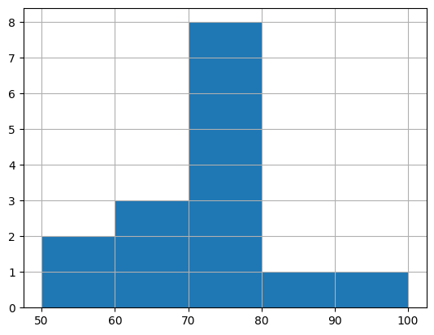
ggplot(grades_data, aes(x="score")) + \
geom_histogram(breaks=[50,60,70,80,90,100])
# the \ character is to continue command on next line
{kind=link}
sns.stripplot(x=scores, jitter=0.01)
<Axes: xlabel='score'>
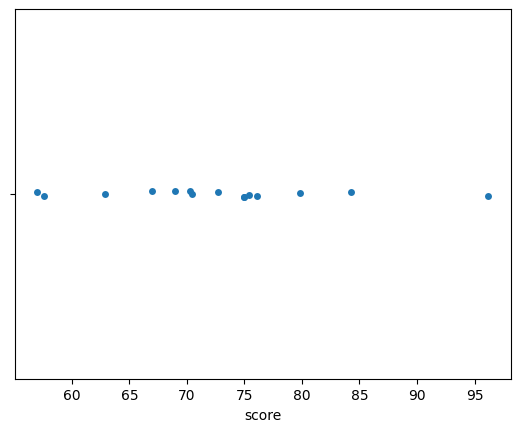
ggplot(grades_data, aes(x="score", y=0)) + \
geom_point(alpha=0.7, size=4, position="jitter") + \
theme(
aspect_ratio=0.15,
panel_grid_major_y = element_blank(),
panel_grid_minor_y = element_blank(),
axis_title_y = element_blank(),
axis_ticks_major_y = element_blank(),
axis_ticks_minor_y = element_blank(),
axis_text_y = element_blank(),
axis_line_y = element_blank()
) + \
scale_x_continuous(limits=[50,100]) + \
scale_y_continuous(limits=[-10,10])
{kind=link}
sns.boxplot(x=scores, width=0.2, whis=10)
<Axes: xlabel='score'>
# non-Tukey boxplot (whiskers set to min and max)
ggplot(grades_data, aes(x=1, y="score")) + \
coord_flip() + \
theme_minimal() + \
stat_boxplot(geom="errorbar", width=0.3, coef=10) + \
geom_boxplot(width=0.9) + \
theme(
aspect_ratio=0.2,
axis_title_y = element_blank(),
axis_text_y = element_blank(),
axis_line_y = element_blank()
)
{kind=link}
sns.boxplot(x=scores, width=0.2)
<Axes: xlabel='score'>
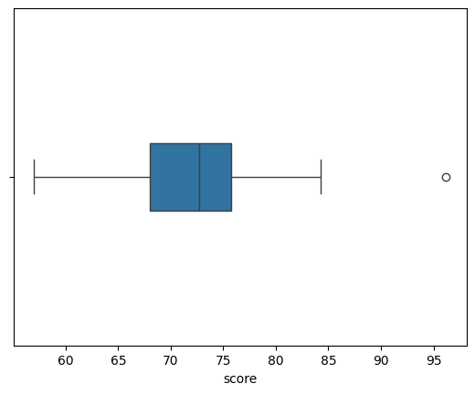
# boxplot
ggplot(grades_data, aes(y='score', x=0)) + \
coord_flip() + \
theme_minimal() + \
stat_boxplot(geom="errorbar", width=0.3) + \
geom_boxplot(width=0.9) + \
theme(
aspect_ratio=0.2,
axis_title_y = element_blank(),
axis_text_y = element_blank(),
axis_line_y = element_blank()
)
{kind=link}
scores.quantile(0.25) # Q1
68.0
scores.quantile(0.5) # Q2 = median
72.7
scores.quantile(0.75) # Q3
75.75
IQR = scores.quantile(0.75) - scores.quantile(0.25)
IQR
7.75
Categorical data#
bg = grades_data['background']
bg
student_ID
1 arts
2 science
3 arts
4 arts
5 science
6 business
7 science
8 business
9 business
10 science
11 business
12 arts
13 science
14 science
15 arts
Name: background, dtype: object
# frequencies
bg.value_counts()
background
science 6
arts 5
business 4
Name: count, dtype: int64
# relative frequencies
bg.value_counts() / len(bg)
background
science 0.400000
arts 0.333333
business 0.266667
Name: count, dtype: float64
# bar chart of counts
sns.countplot(x=bg)
<Axes: xlabel='background', ylabel='count'>
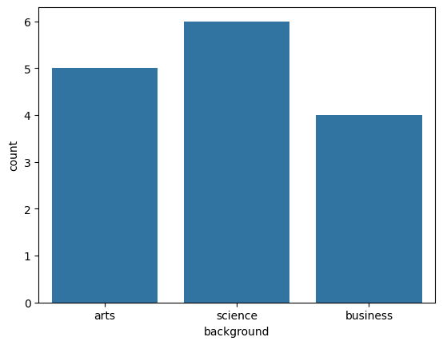
# sns.barplot?
ggplot(grades_data, aes(x="background", fill="background")) + \
geom_bar()
{kind=link}
Comparing two numeric variables#
sns.scatterplot(data=grades_data, x="effort", y="score")
<Axes: xlabel='effort', ylabel='score'>
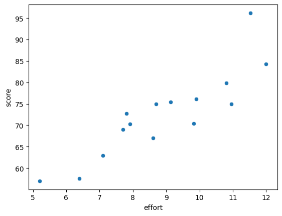
ggplot(grades_data, aes(x="effort", y="score")) + \
geom_point()
{kind=link}
grades_data.cov()
---------------------------------------------------------------------------
ValueError Traceback (most recent call last)
Cell In[36], line 1
----> 1 grades_data.cov()
File /opt/hostedtoolcache/Python/3.10.16/x64/lib/python3.10/site-packages/pandas/core/frame.py:11204, in DataFrame.cov(self, min_periods, ddof, numeric_only)
11202 cols = data.columns
11203 idx = cols.copy()
> 11204 mat = data.to_numpy(dtype=float, na_value=np.nan, copy=False)
11206 if notna(mat).all():
11207 if min_periods is not None and min_periods > len(mat):
File /opt/hostedtoolcache/Python/3.10.16/x64/lib/python3.10/site-packages/pandas/core/frame.py:1993, in DataFrame.to_numpy(self, dtype, copy, na_value)
1991 if dtype is not None:
1992 dtype = np.dtype(dtype)
-> 1993 result = self._mgr.as_array(dtype=dtype, copy=copy, na_value=na_value)
1994 if result.dtype is not dtype:
1995 result = np.asarray(result, dtype=dtype)
File /opt/hostedtoolcache/Python/3.10.16/x64/lib/python3.10/site-packages/pandas/core/internals/managers.py:1694, in BlockManager.as_array(self, dtype, copy, na_value)
1692 arr.flags.writeable = False
1693 else:
-> 1694 arr = self._interleave(dtype=dtype, na_value=na_value)
1695 # The underlying data was copied within _interleave, so no need
1696 # to further copy if copy=True or setting na_value
1698 if na_value is lib.no_default:
File /opt/hostedtoolcache/Python/3.10.16/x64/lib/python3.10/site-packages/pandas/core/internals/managers.py:1753, in BlockManager._interleave(self, dtype, na_value)
1751 else:
1752 arr = blk.get_values(dtype)
-> 1753 result[rl.indexer] = arr
1754 itemmask[rl.indexer] = 1
1756 if not itemmask.all():
ValueError: could not convert string to float: 'arts'
grades_data.cov()['effort']['score'] # note: this uses 1/n-1
17.097314285714287
grades_data.corr()['effort']['score'] # note: this uses 1/n-1
0.8794375135614694
Comparing two categorical variables#
# TODO: figure out how to get stacked graph
# sns.countplot(data=grades_data, x="background", y="curriculum")
ggplot(grades_data, aes(x="background")) + \
geom_bar(aes(x='background', fill='curriculum'), color = "black")
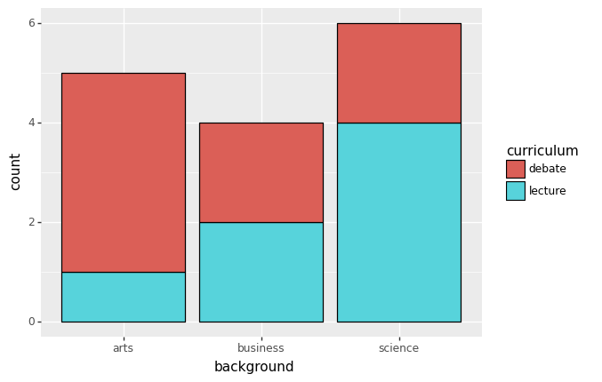
<ggplot: (8788813728337)>
Comparing a categorical and a numerical variable#
# TODO(ivan): figure out seaborn way
# compare boxplots
ggplot(grades_data, aes(x='curriculum', y='score', fill='curriculum')) + \
coord_flip() + \
stat_boxplot(geom="errorbar", width=0.3) + \
geom_boxplot(width=0.9) + \
theme(aspect_ratio=0.4)
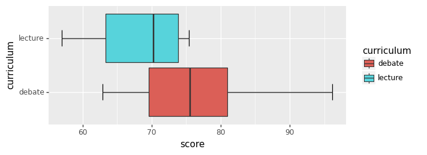
<ggplot: (8755351829833)>
Chelsea tutorial sample code#
see
from plotnine import *
from plotnine.data import mtcars
# option 1 ok on same line
ggplot(mtcars, aes(x="wt", y="mpg")) + geom_point()
# option 2 (most common) bcs Py exprs inside parens allow newlines
(ggplot(mtcars, aes(x="wt", y="mpg")) +
geom_point())
# option 3
ggplot(mtcars, aes(x="wt", y="mpg")) + \
geom_point()
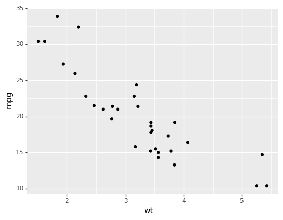
<ggplot: (8788813817189)>
ggplot(mtcars, aes(x="wt", y="mpg")) + \
geom_point() + \
stat_smooth(method="lm") + \
theme_minimal()
<ggplot: (8788813742497)>
penguin = pd.read_csv("https://raw.githubusercontent.com/cmparlettpelleriti/CPSC392ParlettPelleriti/master/Data/penguins.csv")
print(penguin.head())
Unnamed: 0 species island ... body_mass_g sex year
0 0 Adelie Torgersen ... 3750.0 male 2007
1 1 Adelie Torgersen ... 3800.0 female 2007
2 2 Adelie Torgersen ... 3250.0 female 2007
3 3 Adelie Torgersen ... NaN NaN 2007
4 4 Adelie Torgersen ... 3450.0 female 2007
[5 rows x 9 columns]
ggplot(penguin, aes(x="bill_length_mm", y="bill_depth_mm", color="species")) + \
geom_point()
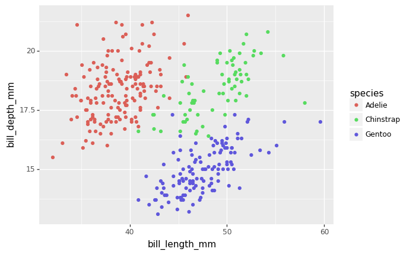
<ggplot: (8788813886629)>
# (ggplot(penguin, aes( x = "body_mass_g")))
ggplot(penguin, aes(x="species", y="bill_length_mm", fill="species")) + \
geom_boxplot() + \
geom_point(position=position_jitter(width=0.04))
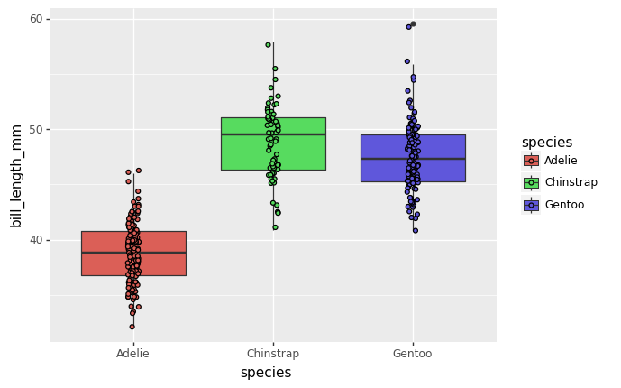
<ggplot: (8764586007221)>
ggplot(penguin, aes(x="species", y="body_mass_g", fill="species")) + \
stat_summary(fun_data="mean_sdl", geom="bar") + \
ggtitle("Penguin Body Mass by Species") + \
labs(x="Species", y="Body Mass (g)") + \
theme(
panel_grid_major_x = element_blank(),
panel_grid_minor_x = element_blank(),
panel_grid_minor_y = element_blank(),
legend_position = "none"
) + theme_minimal()
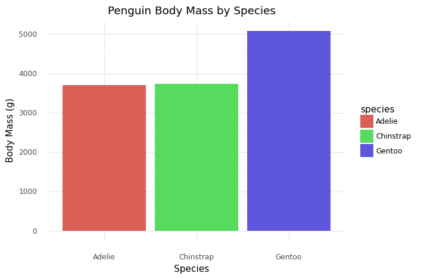
<ggplot: (8764586025421)>
cereal = pd.read_csv("https://raw.githubusercontent.com/reisanar/datasets/master/Cereals.csv")
cereal.head()
| name | mfr | type | calories | protein | fat | sodium | fiber | carbo | sugars | potass | vitamins | shelf | weight | cups | rating | |
|---|---|---|---|---|---|---|---|---|---|---|---|---|---|---|---|---|
| 0 | 100%_Bran | N | C | 70 | 4 | 1 | 130 | 10.0 | 5.0 | 6.0 | 280.0 | 25 | 3 | 1.0 | 0.33 | 68.402973 |
| 1 | 100%_Natural_Bran | Q | C | 120 | 3 | 5 | 15 | 2.0 | 8.0 | 8.0 | 135.0 | 0 | 3 | 1.0 | 1.00 | 33.983679 |
| 2 | All-Bran | K | C | 70 | 4 | 1 | 260 | 9.0 | 7.0 | 5.0 | 320.0 | 25 | 3 | 1.0 | 0.33 | 59.425505 |
| 3 | All-Bran_with_Extra_Fiber | K | C | 50 | 4 | 0 | 140 | 14.0 | 8.0 | 0.0 | 330.0 | 25 | 3 | 1.0 | 0.50 | 93.704912 |
| 4 | Almond_Delight | R | C | 110 | 2 | 2 | 200 | 1.0 | 14.0 | 8.0 | NaN | 25 | 3 | 1.0 | 0.75 | 34.384843 |
cereal.shape
(77, 16)
# via https://github.com/cmparlettpelleriti/CPSC392ParlettPelleriti/blob/master/InClass/LectureNotebooks/Visualization%20II--Class%205.ipynb
penguins = pd.read_csv("https://raw.githubusercontent.com/cmparlettpelleriti/CPSC392ParlettPelleriti/master/Data/penguins.csv")
diabetes = pd.read_csv("https://raw.githubusercontent.com/cmparlettpelleriti/CPSC392ParlettPelleriti/master/Data/diabetes2.csv")
popdivas = pd.read_csv("https://raw.githubusercontent.com/cmparlettpelleriti/CPSC392ParlettPelleriti/master/Data/PopDivas_data.csv")
# popdivas
popdivas.shape
(1599, 14)
# popdivas['track_name'][popdivas["artist_name"]=="Beyoncé"]
# popdivas[popdivas["artist_name"]=="Beyoncé"]['track_name']
# I am seriously questioning this dataset since it doesn't include
# Flawless by Beyoncé, which is like the greatest song of all time
# https://www.youtube.com/watch?v=IyuUWOnS9BY&t=141s